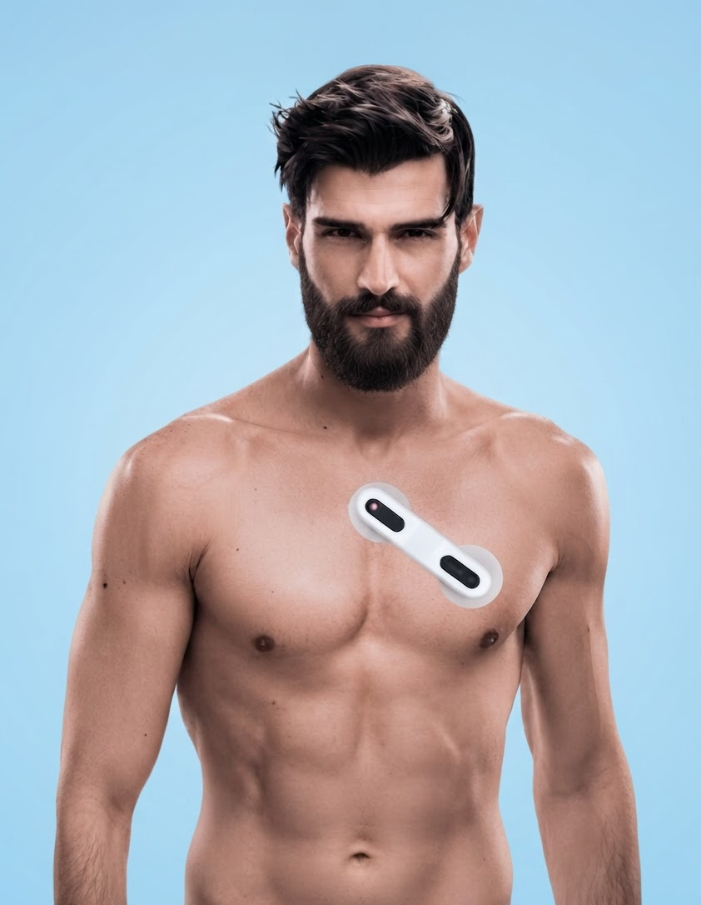
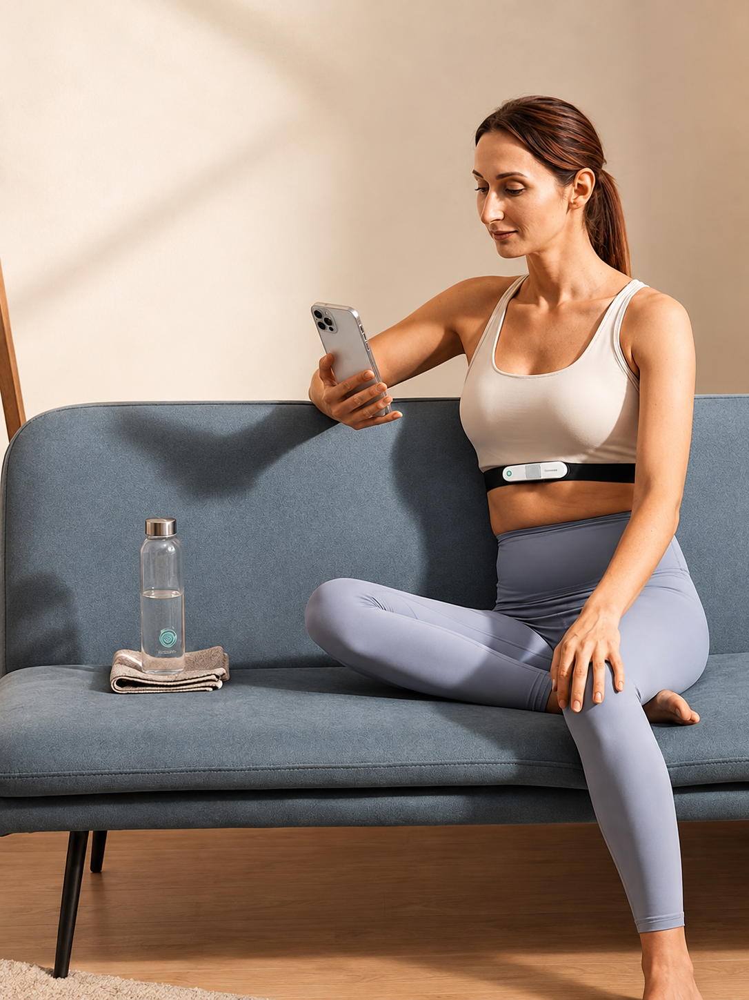

Extended ECG Monitoring For Clearer Cardiac Insights.
Healthcare Providers Can Use VitalWeave To Deliver Extended ECG Monitoring, Reliable Connectivity, And Patient-Centered Insights For Better Cardiac Care.
Cardiovascular ECG
Healthcare Providers Can Use VitalWeave To Deliver Extended ECG Monitoring, Reliable Connectivity, And Patient-Centered Insights For Better Cardiac Care.

Advanced ECG Monitoring
For Cardiac Care
VitalWeave Combines Wearable ECG Technology, Continuous Monitoring, And Intelligent Analysis To Help Healthcare Providers Capture Cardiac Data Beyond Routine Clinical Visits. From Extended ECG Recording To AI-Assisted Reviews, VitalWeave Helps Identify Relevant Heart Rhythm Patterns, Connect Patient Data, And Support Faster, More Informed Cardiac Care.

From Continuous ECG
To Clinical Insight
VitalWeave Connects Wearable ECG Monitoring, Intelligent Analysis, And Patient Data To Help Healthcare Teams Understand Cardiac Health Beyond Routine Clinical Visits.
Extended ECG Monitoring
Monitor heart activity continuously over extended periods to capture rhythm changes and cardiac events.
AI-Powered ECG Analysis
Analyze ECG recordings to identify abnormal heart rhythms and highlight important cardiac patterns for clinical review.
Clinical Cardiac Insights
Turn continuous ECG data into clear insights that help clinicians understand heart health and support informed decisions.
The Journey Of Extended ECG Monitoring
Discover A Wearable ECG Monitoring Solution Designed For Extended Cardiac Monitoring, Continuous Heart Rhythm Tracking, And Clearer Clinical Insights.
Study Initiation
Physicians initiate cardiac monitoring based on patient needs and clinical requirements.
Device Setup
A wearable ECG device is fitted or delivered for simple patient-led monitoring.
Continuous Recording
The device continuously captures ECG data during daily activities, sleep, and movement.
AI Processing
AI processes ECG data to identify rhythm patterns and prioritize important events.
Clinical Review
Healthcare professionals review ECG findings and assess relevant cardiac rhythm patterns.
Report Delivery
Structured reports summarize key findings to support informed clinical decision-making and care.
Traditional vs Connected ECG Monitoring
A More Practical Approach To Extended Monitoring
| Feature | Traditional Holter | VitalWeave |
|---|---|---|
| Wear Format | Multiple ECG Leads Connected To A Separate Recording Device | Lightweight Wearable Device Designed For Comfortable Extended Monitoring |
| Monitoring Period | Typically Limited To 24–48 Hours Of Recording | Extended Continuous Monitoring For Up To 14 Days* |
| Patient Comfort | Wires And Equipment May Interfere With Daily Activities | Designed To Support Greater Comfort And Freedom During Everyday Routines |
| Patient Mobility | Can Be Restrictive During Sleep, Movement, And Daily Activities | Enables Patients To Continue Normal Activities While Being Monitored |
| Data Collection | Data Generally Stored Locally On The Recording Device | ECG Data Can Be Securely Connected And Transferred Through A Digital Workflow |
Supporting Cardiac Monitoring Across The Care Journey

Hospitals
Extend Cardiac Monitoring Beyond
Inpatient Settings And Support Post-
Discharge Follow-Up For Patients.
Clinics & Diagnostic Centers
Add Enhanced ECG Monitoring With Simple
Workflows For Efficient Diagnostic Service
Delivery.
At-Home Convenience
Monitor Patients From Home While
Keeping Healthcare Teams Connected To
Cardiac Data.
Cardiology Practices
Support Longer-Duration ECG Studies For
Patients Experiencing Intermittent Or
Unexplained Cardiac Symptoms.
Build Better Care Around Continuous
Patient Health Insights
Discover Connected VitalWeave Monitoring That Helps Healthcare Teams Track Vital Changes, Support Better Decisions, And Improve Patient Care.